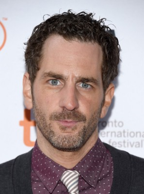

#6465 Amelia

 IMDB-Wertung: 5.8 / 10
IMDB-Wertung: 5.8 / 10  Tomatometer: 20
Tomatometer: 20  Metascore: 0
Metascore: 0 
Der Film zeigt das Leben der legendären amerikanischen Pilotin Amelia Earharts ihre fliegerische Triumphe und ihr kometenhafter Aufstieg zu Ruhm und Anerkennung in einer von Männern dominierten Welt. Unterstützung findet sie in der stürmischen Beziehung zu ihrem Geschäftspartner, Verleger und Liebhaber George Putnam. Der gemeinsame Ehrgeiz, die gegenseitige Bewunderung und letztendlich ihre große Liebe zueinander kann nicht einmal durch ihre kurze, aber heftige Affäre mit Gene Vidal auseinanderbrechen
Jahr: 2009
Dauer: 107 Minuten
FSK:
Land: USA Studio: Fox Searchlight PicturesTonspuren: DD5.1 - ,
Untertitel:
Auflösung: 1080p (1920x824) Größe: 3450 MB
Genre: Drama, Abenteuer, Liebe, Biographie
Regisseur: Mira Nair
Drehbuch: Ronald Bass
Soundtrack:
Darsteller:
 Hilary Swank als Amelia Earhart
Hilary Swank als Amelia Earhart Richard Gere als George Putnam
Richard Gere als George Putnam Ewan McGregor als Gene Vidal
Ewan McGregor als Gene Vidal Christopher Eccleston als Fred Noonan
Christopher Eccleston als Fred Noonan Joe Anderson als Bill Stultz
Joe Anderson als Bill Stultz Cherry Jones als Eleanor Roosevelt
Cherry Jones als Eleanor Roosevelt Mia Wasikowska als Elinor Smith
Mia Wasikowska als Elinor Smith-  Aaron Abrams als Slim Gordon
- Dylan Roberts als Leo Bellarts
- Tom Fairfoot als Balfour
- Ryann Shane als Young Amelia
- Elizabeth Shepherd als Frances Putnam
- Richard Donat als Gallagher
 Scott Anderson als Parade Reporter
Scott Anderson als Parade Reporter Jeremy Akerman als Sheriff
Jeremy Akerman als Sheriff- Thomas Hauff als Man at Opera House
 Danielle Bourgon als 2nd Woman at Opera
Danielle Bourgon als 2nd Woman at Opera- Hamish McEwan als Paul
- Jeffrey Knight als Commander Thompson
- Paul Johnston als Thomas O'Hare
- Daniel Janks als Reporter #2
 Richard Lothian als Coastguard Man
Richard Lothian als Coastguard Man- Divine Brown als Torch Singer
- Elizabeth Saunders als Louise Thaden
- Precious Chong als Gladys O'Donnell
 Duane Murray als Cleveland Reporter
Duane Murray als Cleveland Reporter- Julia Juhas als Commodification Montage Dancer
- Eva Redpath als Commodification Montage Dancer
- Karissa Strain als Commodification Montage Dancer
- Katie Strain als Commodification Montage Dancer
- Leanne Melissa Bishop als Amelia's Make-up Artist , uncredited
- James Byron als Charlie , uncredited
- Gillian Ferrier als Student , uncredited
- Scott Yaphe als William Dalten
- William Cuddy als Gore Vidal
- Sarah Kitz als George's Secretary
- Keelin Jack als Student
- Derek Keurvorst als Minister
- Sarah Dood als 1st Woman at Opera
- Michael James Daly als Frank Cipriani
- Michael Richard als Reporter #1
- Ron Smerczak als Reporter #3
- Kerin McCue als Movie Tone Announcer
- Kathryn Haggis als Powder Puff Aviator
- Joe Renzi als Welsh Singer
- Geoff Gillespie als Welsh Singer
- Andrea Ciacci als Commodification Montage Dancer
- Alexandra MacLean als Commodification Montage Dancer
- Kristen Munro als Commodification Montage Dancer
- Jamie Holmes als Commodification Montage Dancer
Datei: X:\2009(A-F)\Amelia (2009, FSK, 1920x824).mkv seit 23.06.2017
Festplatte: HD 2008(G-Z)-2009(A-F)
 Es gibt insgesamt 91 Filme in der Gruppe '2009(A-F)'
Es gibt insgesamt 91 Filme in der Gruppe '2009(A-F)'